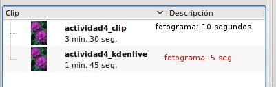
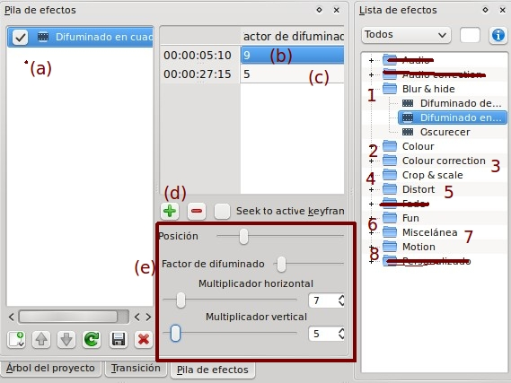
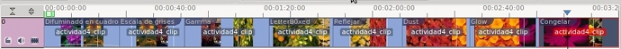

1.2. Actividad Práctica
Aspectos Previos:
Para realizar el proyecto, en su primera fase, importaremos un clip de presentación de diapositivas. Para ello vamos utilizar las imágenes de los Recursos del Tema de video.
Si lo deseas podrás utilizar un video propio o un video descargado de algunas de las webs recomendadas en este curso.
El video a utilizar ha de tener una duración mínima de 2 minutos para poder dividirlo en varios clips o fragmentos para aplicar uno más efectos a cada una de los mismos.
ACTIVIDAD 4 - EFECTOS
1.Genera un proyecto nuevo denominado actividad3_kdenlive con un perfil HD 720p 25 fps con una pista de video y otra de audio.
2. Guarda dicho proyecto como actividad3_kdenlive.
3. Importa un clip de diapositivas con una duración mínima total de 2 minutos o un video del que dispongas con un tiempo aproximado.
Nota: si importas las imágenes de la carpeta flores de los recursos del tema de video, modifica el clip de diapositivas bien en el tiempo de duración o bien activa la opción repetir.

4. Ubica en la pista de video tu clip de diapositivas generado o tu video desde el Árbol de Proyectos. Utilizando la herramienta de corte, divide el clip original en, al mínimo, ocho clips o fragmentos.
5. Aplica, al menos un efecto, a cada uno de los clips fragmentados de cada uno de los apartados de efectos. Es decir, al primer clip o fragmento de video le aplicamos un efecto del grupo 1 (Blur & Hide).
A modo de ejemplo hemos aplicado el efecto de difuminado en cuadro. Este tipo de efectos nos pide que indiquemos en que posición (b) aplicaremos el mismo y las características del mismo (c). Para agregar/eliminar el efecto en más frames de nuestro clip utilizaremos la barra (d) con añadir (+) y eliminar (-).
Al igual que el resto de efectos dispone (e) de parámetros que podemos modificar para ajustarlo a nuestros gustos o necesidades.
File / Save as
Nota: No hemos aplicado los efectos de fade, que utilizaremos en el apartado de transiciones, y los relacionados con el sonido (Audio y Audio Correction) ya que este video no hemos contemplado el uso de una pista con sonido. En caso de que uses un video propio con sonido podrás utilizar dichos apartados. La función y forma es similar al resto de los efectos.
6. Tal como se ha indicado en el apartado anterior, aplica un efecto al resto de los clips o fragmentos de los siguientes apartados de efectos: (2-colour, 3-colour correction, 4-crop & scale, 5-Distor, 6-Fun, 7-Miscelánea y 8-motion). El resultado podría ser parecido al de la imagen.

Nota: trata de utilizar efectos diferentes a los mostrados en el proyecto ejemplo del punto 1.1. de este tema.
7. Guarda el proyecto y lo conservas en una carpeta para utilización en actividades posteriores.
Jo.R.C.A. 2004 - 2011

Edición de Audio y Video con Software Libre by José Ramón Cerdeira Alonso is licensed under a Creative Commons Reconocimiento-No comercial-Compartir bajo la misma licencia 3.0 España License